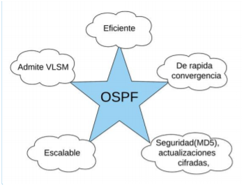

Mi Perfil
Mi Perfil
Aplicación Web para Anomalías en una red de datos usandp el protocolo OSPF
Existen muchas soluciones para la detección y corrección de fallas, de forma tempranana mientras una red se encuentre en equipamiento activo. Una detección tardía conlleva muchos problemas y degradación de los servicio que se ofrece así como el incumplimiento de acuerdos de un servicio efectivo. A continucación encontrará un sistema para disminuir fallas en una red de datos de manera temprana, haciendo uso de una arquitectura de gestion que usa el protocolo OSPF permitiendo así la correción automatizada de fallas mediante un análisis panorámico de la red empleando un modelo de detección de anomalía basada en grafos.
Se tiene dos categorías para los algoritmos para detección de fallas; según un patrón de Anomalías y por el comportamiento normal de la red. Si es por anomalía se necesita revisar conceptos previos y de esta forma evitar nuevos tipos de fallas.(Chu 2015). Para el caso por comportamiento normal de red, se crea un perfil y de esta forma almacenar los parámetros de funcionamiento de la red. Entre los algoritmos de detección de cambios se destaca el propuesto por Thottan y Ji. (Roy 2014, Bhuyan 2014). Este algoritmo resulta eficiente para detectar fallas a nivel de equipos de interconexión, ya que analiza los componentes de la red de forma individual y genera alarmas, presentando insuficiencias a la hora de evaluar propagación de las anomalías para evaluar el impacto de las fallas.(Ji 2003, M. Thottan 2010).
Definición: Protocolo de encaminamiento, basado en estado de enlace, que utiliza el costo de las interfaces del router y usa el algoritmo Dijkstra, para calcular la ruta más corta entre dos nodos, permitiendo la autenticación de actualizaciones de ruteo, máscaras de subred de longitud variable y resumen de rutas.
CHU, Q. Z. A. T. (2015). "Structure regularized traffic monitoring model for traffic matrix estimation and anomaly detection. Control Conference (CCC). Chinese, Hangzhou: 4980-4985. ROY, Debdutta Barman; CHAKI, Rituparna.(2014) State of the art analysis of network traffic anomaly detection. En Applications and Innovations in Mobile Computing (AIMoC). IEEE, p. 186-192. JI, M. T. A.. (2003). "Anomaly Detection in IP Networks." IEEE Transactions in Signal Processing. 51